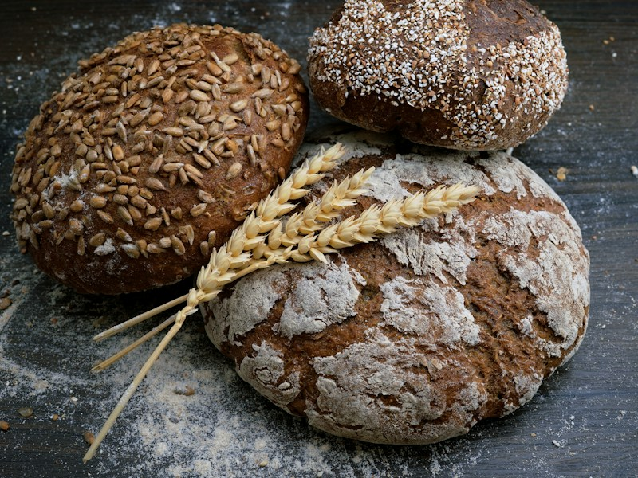
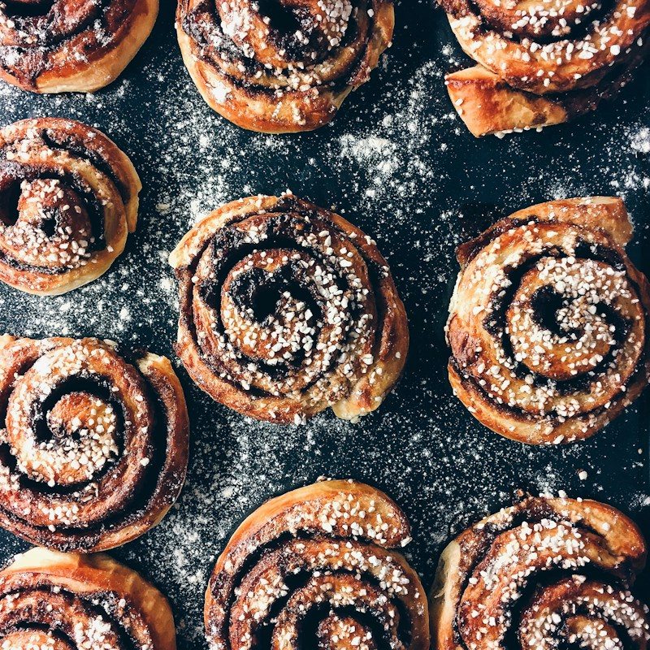
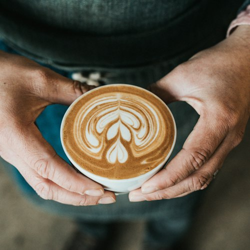
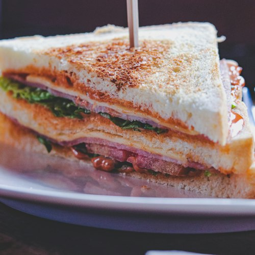

Caught the counter at its best, or baked something at home with our loaf? Tag #LuneAndCrumb.
Bread, pastry, coffee, and the Walcot Street storefront — click any photo to enlarge.




Caught the counter at its best, or baked something at home with our loaf? Tag #LuneAndCrumb.
A closer look at the mornings behind the counter.